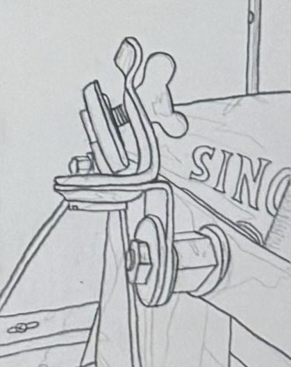
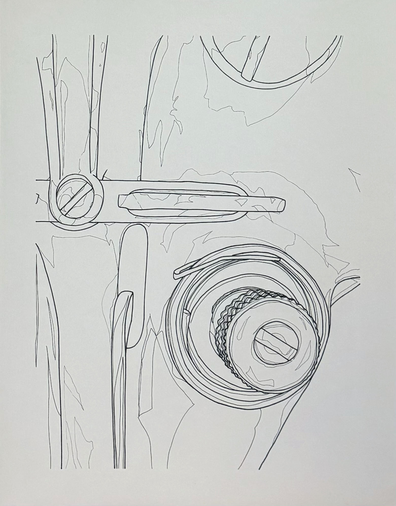
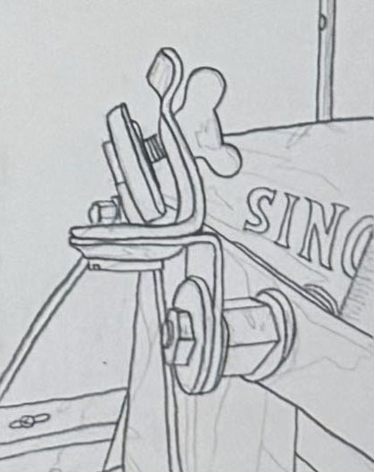
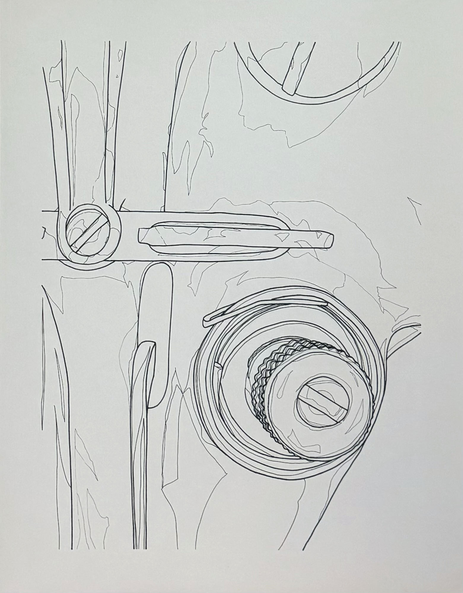

Mechanical Beauty
A series of eight drawings that study the beauty of a vintage Singer sewing machine.
A selection of drawings from our collection.
A series of eight drawings that study the beauty of a vintage Singer sewing machine.
 



A series of three drawings that study atmospheric perspective.